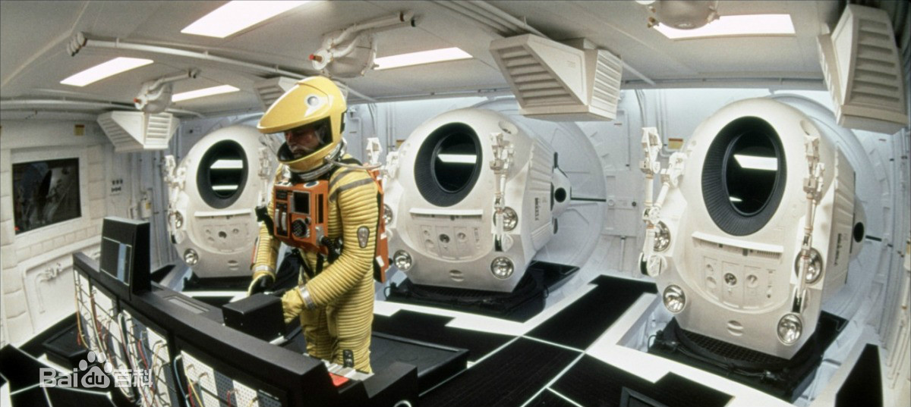

Spaceship is a kind of spacecraft that transports astronauts and goods to space and returns safely. Spacecraft can be divided into two types: disposable and reusable.
The spacecraft is put into the orbit of earth satellite by carrier rocket, and then re-enter the atmosphere. In addition to the basic system equipment of general artificial satellite, there are life support system, re-entry system for re-entry to the earth, recovery and landing system, etc.
